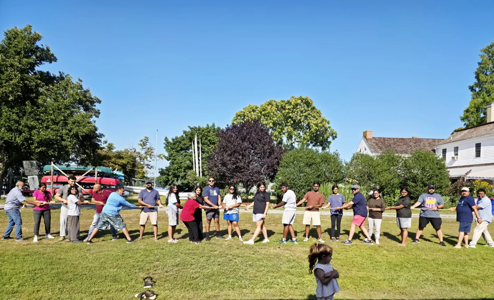

Serve with Bethel
Find a way to serve.
We believe following Jesus shapes how we care for one another and for our neighbors. There is room to take part in the life of our church.

Start with a conversation
Start with a conversation.
Interested in helping at church? Come to a Sunday service and speak with one of our pastors about current needs and how you’d like to be involved.
Whether you’re new here or have been part of Bethel for a while, we’d love to get to know your interests and gifts.
Come this Sunday